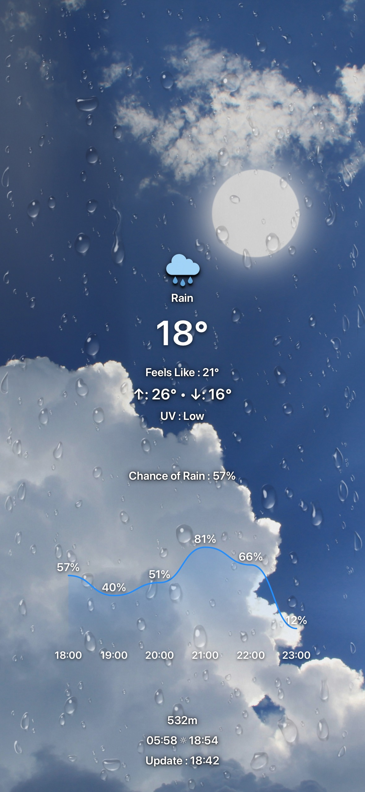
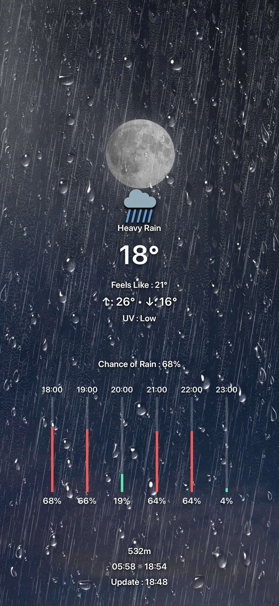
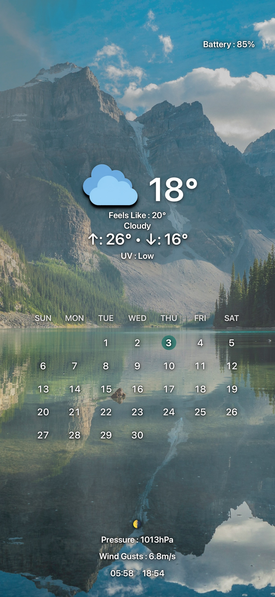
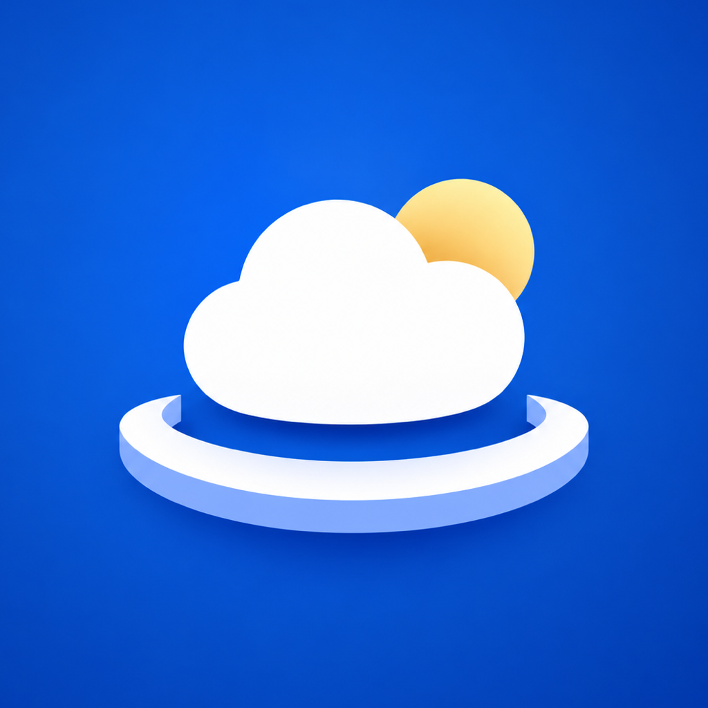

Dynamic Weather
Rain, snow, fog, thunder, and changing skies are layered over your photo using the current weather—not a future forecast.




OdodockTurn your favorite photo into a wallpaper that reflects the weather, sunlight, and the details you care about.
Rain, snow, fog, thunder, and changing skies are layered over your photo using the current weather—not a future forecast.



Keep separate backgrounds and item layouts, then let sunrise and sunset decide which composition to render.
The sun and moon move along an arc based on local sunrise, sunset, and the time of day.
Find the foreground in a photo so the sun or moon can appear behind a mountain, building, tree, or cloud.
Tap to edit. Long-press to move. Resize and align weather items without losing the look of the original photo.
If fresh weather cannot be reached, Ododock keeps the last successful composition available for the next render.
Frame it for your device and optionally find a foreground depth layer.
Select weather items, tune their style, and arrange separate day and night layouts.
Run the Ododock shortcut to render your saved setup and use the result as wallpaper.
No account. No advertising tracker. Backgrounds, depth layers, and layout settings are stored on your device. Shared setup files exclude your saved location and remove photo metadata.
Read the Privacy Policy